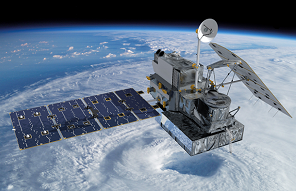

NOAA气象卫星系统简介
NOAA系列气象卫星（National Oceanic and Atmospheric Administration, USA）自从上世纪70年代就飞行在高度为800千米的地球轨道上（这个系列中第一个发射的的是卫星TIROS-M，发射于1970年2月23号）。
NOAA气象卫星运行在太阳同步轨道，也就是，每一个NOAA气象卫星在每天相同的时间段经过某一地球区域。卫星轨道高度大约在800千米。考虑到视野带宽，为了保证测绘任意一个区域的表面都能取得较好空间分辨率，每昼夜每个NOAA气象卫星至少围绕地球转4圈。不同NOAA气象卫星在不同时间经过某点，以保证任意地点各个卫星的经过有均匀的时间间隔。
地表遥感图片在频率137MHz上以APT模拟格式进行传输。在NOAA气象卫星中，图像数据被分为两个通道：
- 可见光范围（用于白天）
- 红外线范围（主要用于夜晚）
NOAA气象卫星APT图像传输系统的分辨率是4km，卫星扫描区域宽度是大约3000km，周期是每个卫星没天绕地球旋转3-4圈，或者8-12圈，具体圈数取决于当前运行的NOAA气象卫星的数目。APT信号持续的向地球发送信号，只有当卫星处于接收站的可见范围内，接收站才能接收到卫星发送来的图像信号，因此，只有当卫星每天经过接收站上空的时间段内，接收站才能正确接收信号。接收站可接收信号的实际时间最长为15分钟，在这期间，卫星发送的地表图像是沿着卫星运行方向的一段长度约5800km的一段地表的图像。
在NOAA气象卫星上运行着AVHRR（Advanced Very High Resolution Radiometer）成像仪，该成像仪有五个通道：
| 通道编号 | 分辨率 | 波长 | 主要用途 |
|---|---|---|---|
| 1 | 1.09km | 0.58-0.68 um | 白天云层和地表成像 |
| 2 | 1.09km | 0.725-1.00 um | 海陆分界线 |
| 3A | 1.09km | 1.58-1.64 um | 冰雪区域 |
| 3B | 1.09km | 3.55-3.93 um | 夜晚成像，海洋表面温度 |
| 4 | 1.09km | 10.30-11.30 um | 夜晚成像，海洋表面温度 |
| 5 | 1.09km | 11.50-12.50 um | 海洋表面温度 |
AVHRR的空间分辨率是1.1km，扫描带宽度是3000km，APT系统传输所需的地表图像由成像仪AVHRR产生。
当前运行的NOAA气象卫星有三个：
- “NOAA-15” （f=137.63 MHz）
- “NOAA-18” （f=137.5 MHz）
- “NOAA-19” （f=137.1 MHz）
NOAA气象卫星的外观为下图：

更多NOAA气象卫星的信息请参阅这里：NOAA气象卫星专题